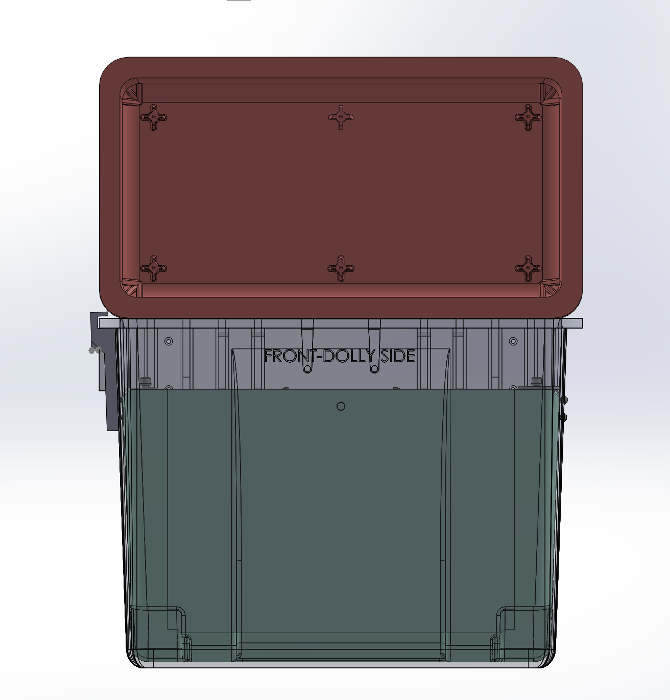
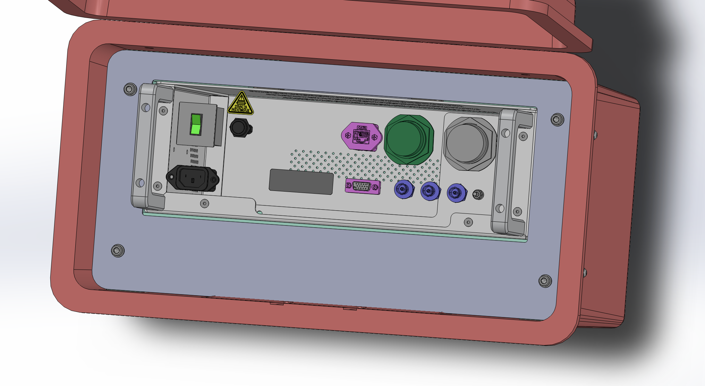
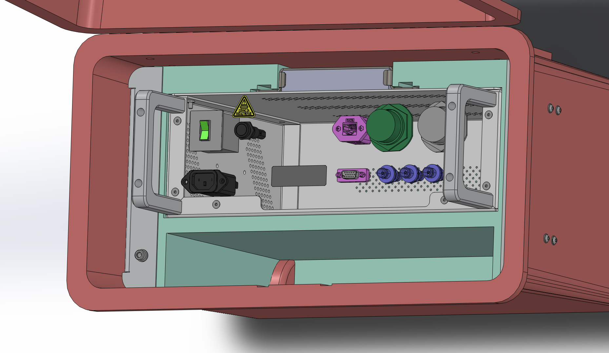
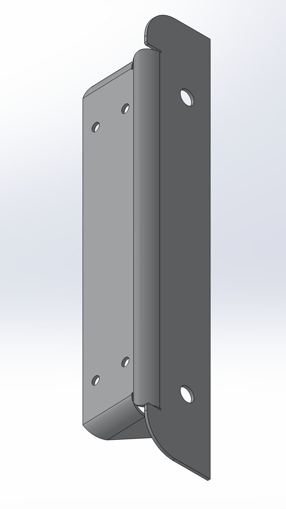
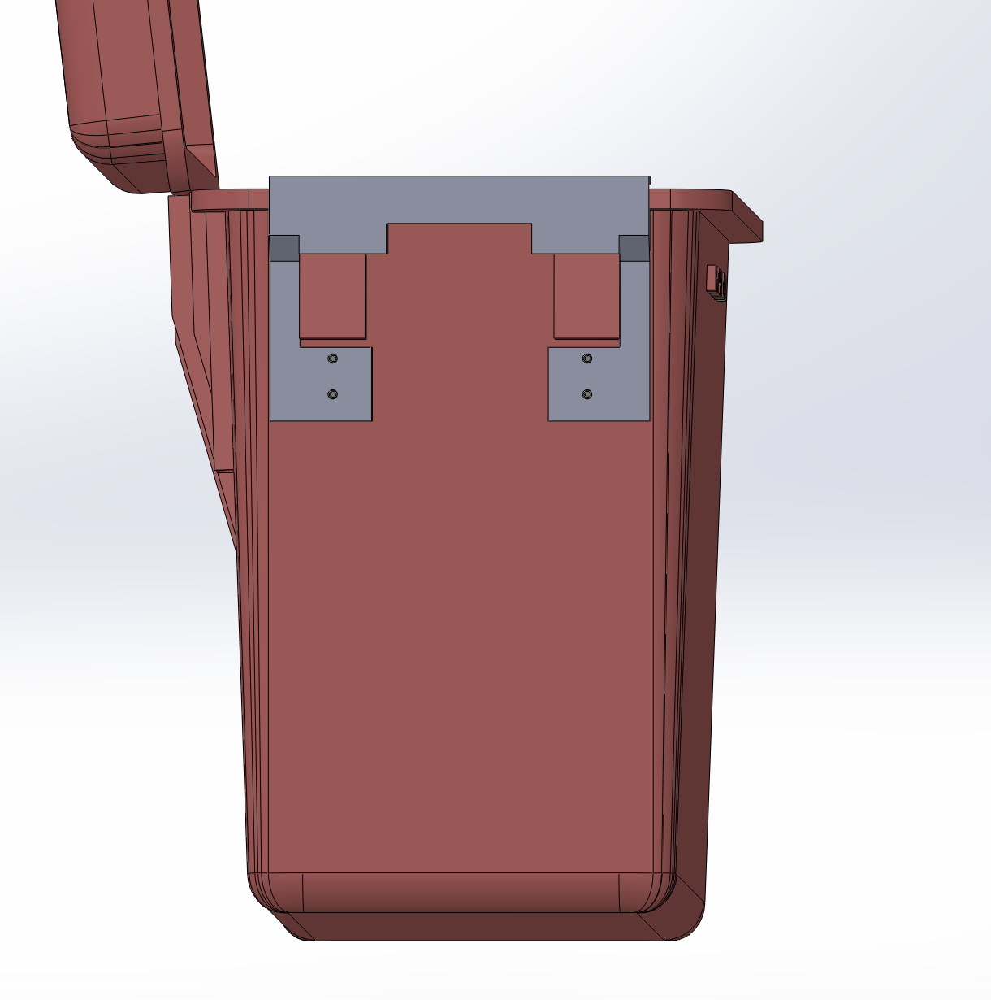

Custom-cut foam
Fitted foam supports the device and limits movement and impact inside the case.
Project 07
A custom protective enclosure that combines a waterproof Pelican case with fitted foam, metal reinforcement, and precisely located mounting hardware.

Our team was tasked with creating a rugged enclosure for a company’s device. The finished system needed to protect the equipment, remain waterproof, and withstand the demands of transportation and field use.
Fitted foam supports the device and limits movement and impact inside the case.
Side plates fasten to the case, and the top plate screws into them to create a rigid assembly around the foam and device.
Custom jigs locate every mounting hole consistently across multiple cases.
We began with manufacturer-supplied CAD models of the Pelican case and the device. I used these models to design the fitted foam and the metal plates that secure the internal assembly. One plate sits on each side and fastens to the case, while the top plate sits above the foam and device and screws into the side plates to stiffen the complete system.



I prepared the CAD files for the foam and metal components and sent them to outside manufacturers for production. Designing the complete assembly digitally allowed us to check the fit between the case, foam, device, plates, and mounting hardware before fabrication.
I also modeled and 3D printed the drill jigs used on the sides of the cases. The jigs registered against the case geometry and guided the drill so that the mounting holes could be placed accurately and repeatedly. Assembly was a hands-on process that included cutting the foam to make room for the metal side plates, correcting fit issues, drilling the cases, and installing the reinforcement hardware.

Before placing the full order, we purchased one sample foam insert and tested it with the complete assembly. The sample fit correctly, so we approved production. However, the larger order arrived in a different type of foam and the inserts no longer fit as intended, requiring the foam to be reordered.
The lesson was simple: always be specific, and never assume that the client knows exactly what you are talking about.